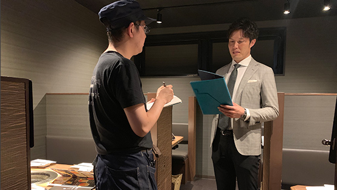
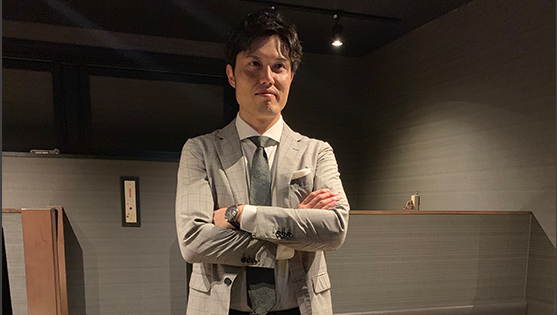

Ineterview 01
どうやってSVになりましたか？
パートナーとして7ヵ月勤務した後に、社員となり店長
を経て、SVになりました。
Ineterview 02
SVの仕事の一番楽しいことを教えてください。
店舗の数値を達成し、収益が上がりオーナー様から感謝され
た時や、店長に関与し成長させ、店長から感謝された時です。

Ineterview 03
これから仕事でチャレンジしたいことを教えてください。
担当している企業様の、他の事業にも影響でき
るようなSV活動をしてみたいと考えております。